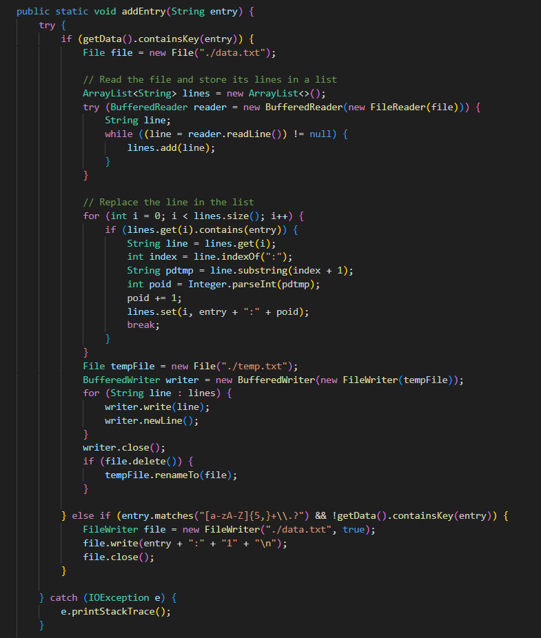

Cette SAE à été réalisée en groupe de 2, le but était de créer un programme permettant le tri de dépèches.
Dans un premier temps nous avons identifié pour chaque catégorie de dépeches des mots qui étais redondants puis nous avons mis en place des lexiques de mots clés basés sur ces mots. En ce comparant les mots d'une dépeches par rapports au différents lexiques, le lexique ayant le plus de mots correspondants à la dépeche sélectionnée determinera la catégorie de la dépeche.
Par la suite le but était de pouvoir créer automatiquement les lexiques de mots clés afin de pouvoir avoir un tri plus précis. les lexiques était construits à l'aide d'une première liste de dépeche. Une fois les lexiques initialisés ont les utilise afin de pouvoir trier la deuxième liste de dépeches et ont observe des résultats globalement plus satisfaisants, les dépeches sont triées de manière plus précise.
La complexité du programme nous as poussés à optimiser et organiser le code, avec le temps j'ai essayé d'optimiser un maximum pour ce rapprocher au maximum d'une pseudo IA, cela à été un réel défi que j'ai fortement aprécié.
Images du projet
Création d'un lexique
Ajout automatique d'un mot au lexique